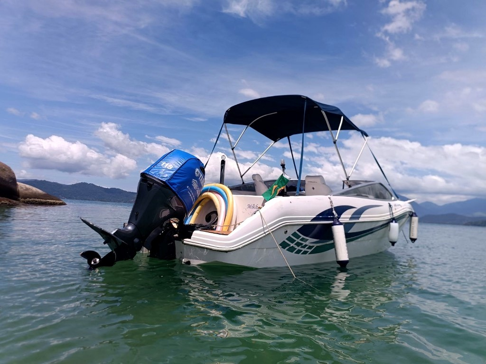
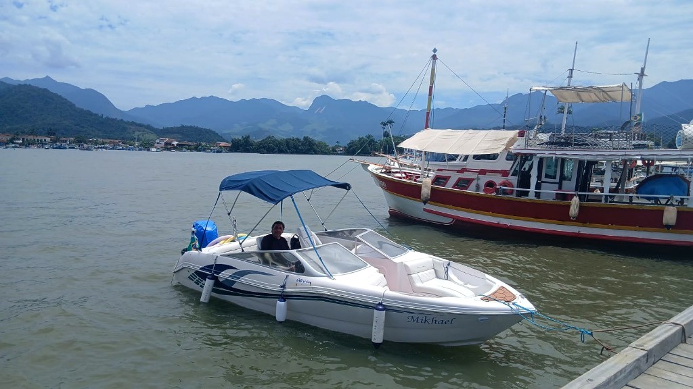
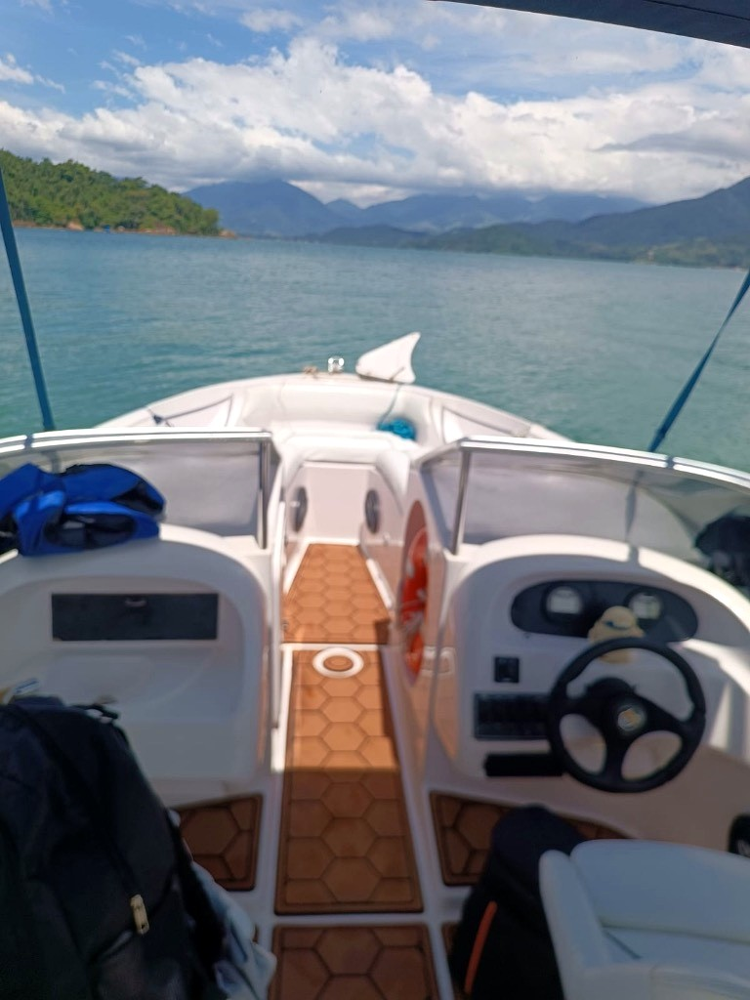
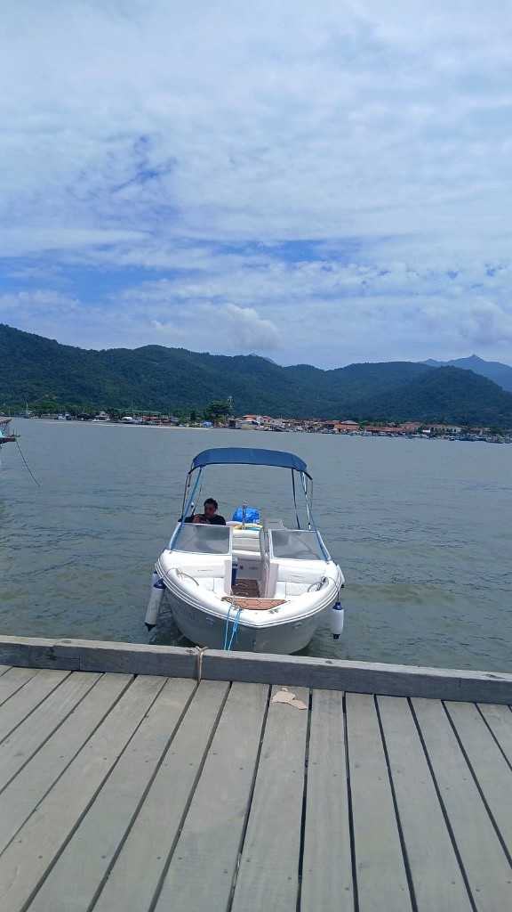
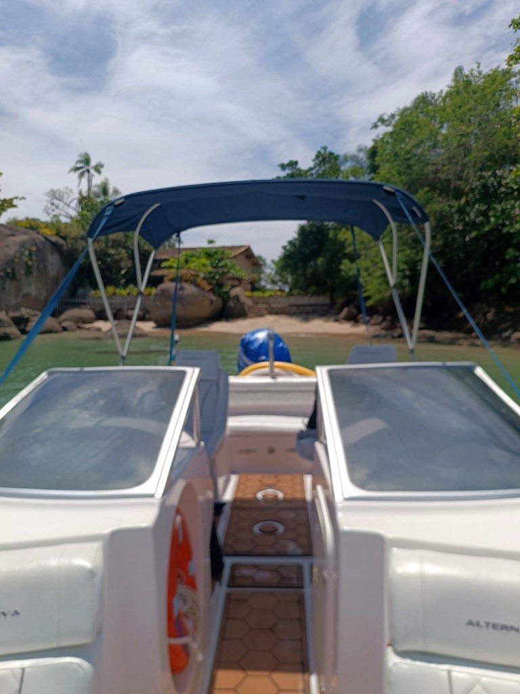

"Venha curtir Paraty a bordo da Lancha Mikhael, praias e ilhas maravilhosas!! Temos roteiros exclusivos, com total segurança e inesquecível!!"

Comandada pelo marinheiro e proprietário David Henrique, a Lancha Mikhael oferece uma experiência exclusiva longe de aglomerações. Você decide o tempo do mergulho, a trilha sonora no som Bluetooth e o momento exato de relaxar ou almoçar numa ilha paradisíaca.
Todos os roteiros contam com 5 horas de navegação pelas águas esmeralda de Paraty, com paradas de aproximadamente 40 minutos e opção de parada para almoço ou porções em restaurantes caiçaras.
Águas abrigadas, natureza exuberante e mergulho relaxante.
O clássico apaixonante com a famosa Praia da Lula e águas calmas.
Cenários de cartão-postal: Ilha dos Cocos e o encanto do Saco da Velha.
A verdadeira piscina natural de Paraty: Lagoa Azul e Ilha dos Cocos.
Casco branco com elegantes faixas azul-marinho, capota protetora, piso náutico amadeirado em EVA com isolamento térmico, estofamento náutico impecável e motor Yamaha 115 HP de alta confiabilidade.

Piso térmico amadeirado que não esquenta ao sol, proa aberta confortável para contemplação e bancos macios para todo o grupo navegar com total estabilidade e comodidade.

Acesso facilitado no Cais de Turismo de Paraty, proporcionando segurança para adultos, crianças e melhor idade.

Aproxime-se das praias cristalinas e desfrute de paradas calmas com água translúcida para relaxar ou nadar.
Motor 4 tempos moderno, silencioso e econômico, com manutenções preventivas rigorosas e todos os itens homologados pela Marinha.
Tudo preparado com carinho para você só se preocupar em aproveitar o dia
Espaço térmico com gelo para manter suas bebidas e petiscos trincando.
Hidratação fresca garantida durante todas as 5 horas de passeio.
Para tirar o sal do corpo após o mergulho nas ilhas de Paraty.
Conecte o seu celular e curta a playlist favorita do seu grupo no mar.
Ideal para boiar sem esforço nas águas calmas e quentes da baía.
Equipamentos para observar cardumes de peixes e a vida marinha local.
Equipamentos de salvatagem certificados pela Capitania dos Portos.
Escolha o roteiro, a data e monte a sua mensagem personalizada para falar diretamente com o David Henrique no WhatsApp.
Tudo o que você precisa saber antes de embarcar com a Lancha Mikhael em Paraty.